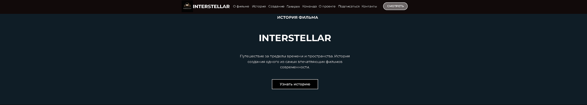

Поклонники научной фантастики
Интересуются космическими историями, научной тематикой и атмосферными визуальными мирами. Ожидают от промосайта сильного первого впечатления и последовательного погружения.
Концепция атмосферного сайта, посвящённого фильму «Интерстеллар». Лендинг знакомит пользователя с историей фильма, процессом создания, визуальными материалами и ключевой командой проекта.

В рамках проекта я провёл анализ тематики и визуального языка фильма, разработал структуру лендинга, создал атмосферную дизайн-концепцию и подобрал изображения с цветовой палитрой.
Также спроектировал информационные блоки и подготовил адаптивные версии, сохранив кинематографичную атмосферу на компьютерах, планшетах и смартфонах.
Interstellar — концепция промосайта, посвящённого одноимённому научно-фантастическому фильму. На странице собраны информация о сюжете, история создания, галерея кадров, сведения о ключевой команде и форма обратной связи.
Создать атмосферный лендинг, который передаёт настроение фильма, погружает пользователя в его визуальный мир и последовательно знакомит с основной информацией о проекте.
Коммуникационная цель: сформировать ощущение космического путешествия и последовательно раскрыть историю фильма, процесс создания и ключевую команду.
Пользовательские задачи: познакомиться с сюжетом, изучить визуальные материалы, узнать о создателях и оставить обратную связь.
Ограничения: сохранить атмосферность тёмного интерфейса, читаемость контента и удобство просмотра на разных устройствах.
Основная аудитория — поклонники научной фантастики, зрители фильма «Интерстеллар», любители кинематографа и пользователи, интересующиеся историей создания известных фильмов.
Интересуются космическими историями, научной тематикой и атмосферными визуальными мирами. Ожидают от промосайта сильного первого впечатления и последовательного погружения.
Хотят ещё раз окунуться в атмосферу фильма, посмотреть кадры, узнать детали создания и познакомиться с ключевой командой проекта.
Ценят историю создания, режиссёрский подход и визуальную эстетику. Для них важны выразительная подача материалов и удобная структура длинной страницы.
Я разработал тёмный кинематографичный интерфейс с глубокими оттенками синего, чёрного и коричневого. Страница построена как последовательное погружение: первый экран, информация о фильме, история создания, галерея, ключевая команда, призыв к просмотру, подписка и форма обратной связи.
Контрастная типографика, крупные изображения и чередование фоновых оттенков разделяют контент на смысловые блоки и поддерживают атмосферу космического путешествия.
Структура ведёт пользователя от первого впечатления к истории фильма, галерее, команде и формам взаимодействия без лишних переходов.
Глубокие оттенки синего, чёрного и коричневого вместе с контрастной типографикой передают настроение фильма и удерживают внимание на ключевых блоках.
Крупные изображения и чередование фоновых оттенков разделяют длинную страницу на понятные сцены и поддерживают ритм космического путешествия.
Полноразмерная десктопная версия объединяет первый экран, информацию о фильме, историю создания, галерею, команду, призыв к просмотру, подписку и форму обратной связи в одном последовательном сценарии.

Интерфейс подготовлен для корректного просмотра на компьютерах, планшетах и смартфонах. Для каждого разрешения сохранена кинематографичная атмосфера, читаемость контента и логика последовательного погружения.


— разработана структура одностраничного сайта;
— создана визуальная концепция в стилистике научной фантастики;
— оформлен первый экран с основным призывом;
— разработаны блоки об истории фильма и его создателях;
— оформлены галерея, команда, подписка и форма обратной связи;
— подготовлены версии для компьютера, планшета и смартфона.
Контент выстроен как последовательное знакомство с фильмом — от первого впечатления до истории создания и ключевой команды.
Тёмная палитра, контрастные светлые элементы и кинематографичные изображения поддерживают атмосферу фильма.
Подборка кадров помогает передать масштаб, настроение и визуальную эстетику проекта.
Карточки знакомят пользователя с режиссёром и ключевыми актёрами фильма.
На странице предусмотрены призывы к просмотру, форма подписки и форма обратной связи.
Интерфейс подготовлен для корректного просмотра на компьютерах, планшетах и смартфонах.
В результате получился атмосферный адаптивный лендинг, который передаёт визуальное настроение фильма «Интерстеллар» и последовательно знакомит пользователя с его историей, героями и создателями. Проект показывает работу с эмоциональной подачей, длинной страницей и адаптивным дизайном.
Лучший способ оценить дизайн — увидеть его в действии.
Откройте опубликованную версию проекта и познакомьтесь с интерфейсом, навигацией, адаптивностью и взаимодействием элементов так, как это увидит реальный пользователь.
Посмотреть сайт в работе